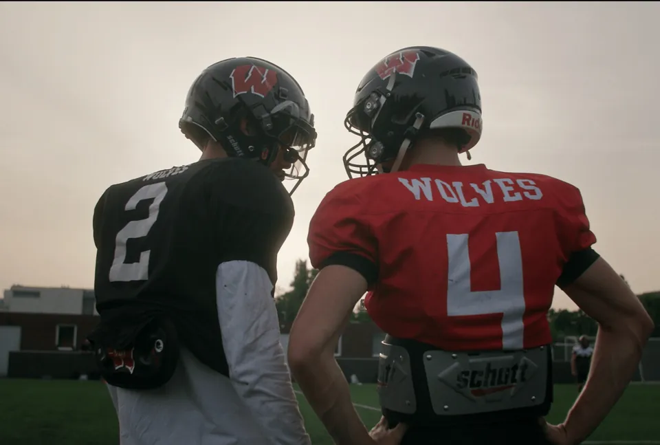
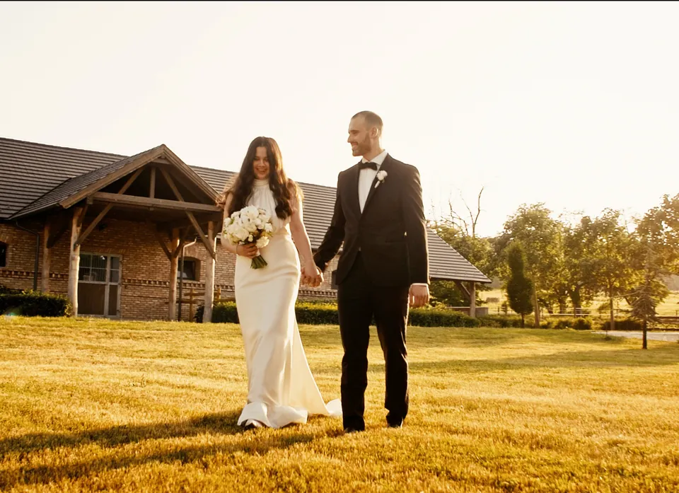
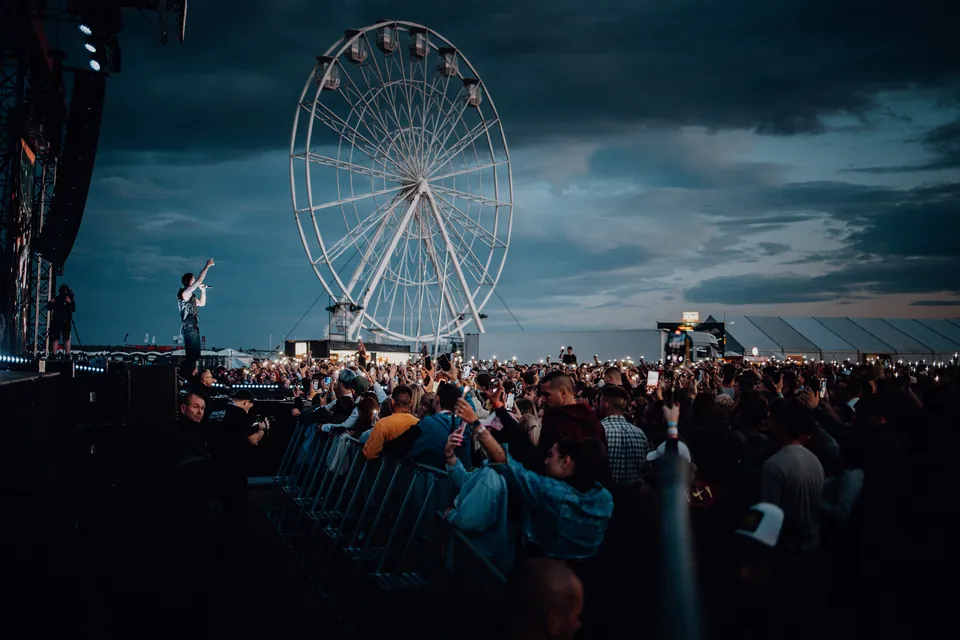
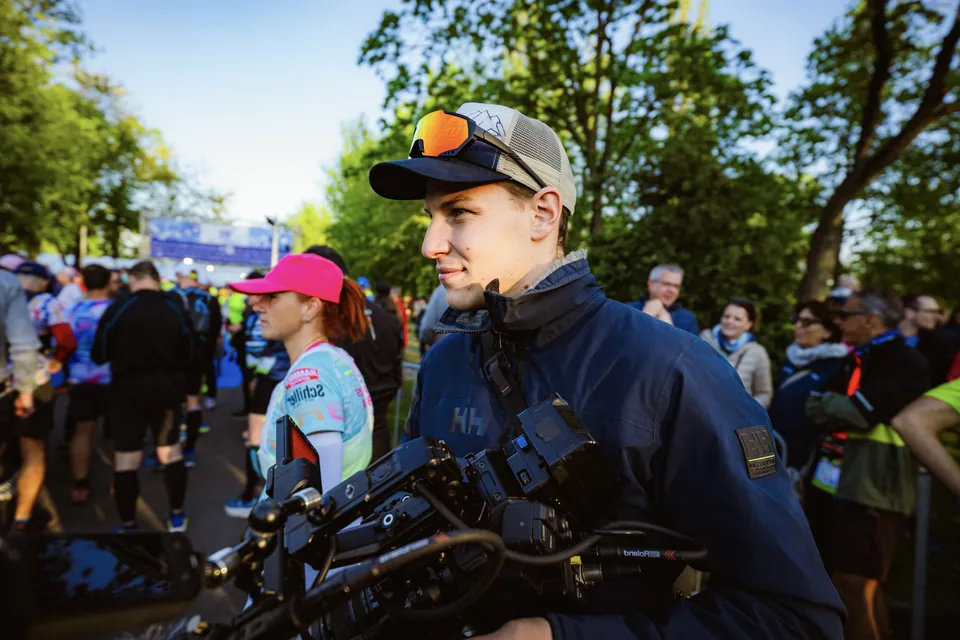
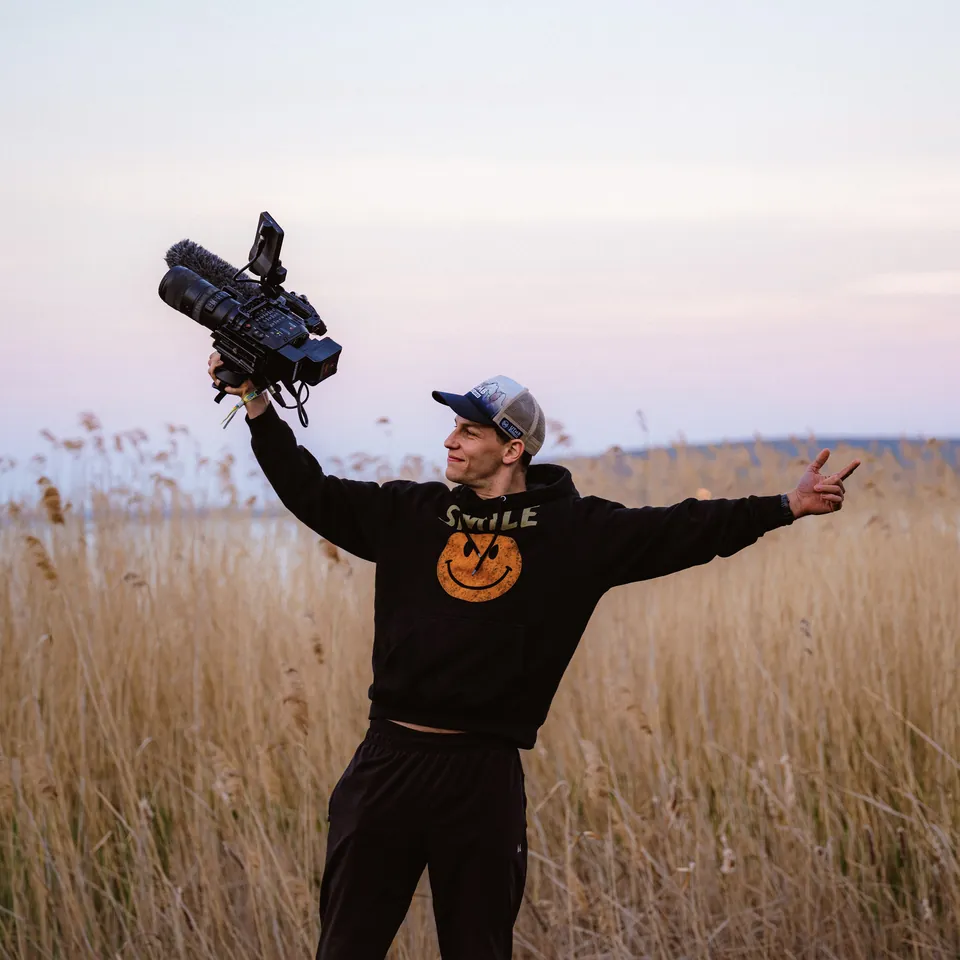
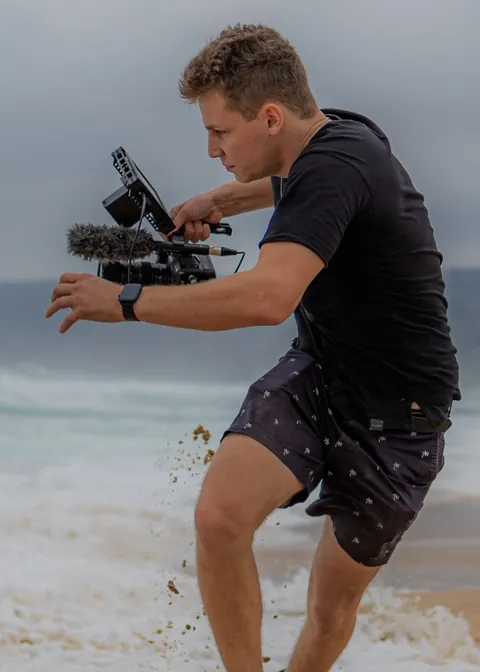

{kind=link}
{kind=link}
{kind=link}
{kind=link}
{kind=link}

Dokumentumfilm
Valós történetek, közelről.

Válogatott munkák — 01
Emberek, helyzetek és részletek — őszintén, érzékenyen, felesleges pózok nélkül.

„Nem csupán azt keresem, ami történik. Azt keresem, ami megmarad belőle.”
Filmek — 02
Rövid és hosszabb formátumok, atmoszférával és saját ritmussal.
Szolgáltatások — 03
Teljes napos történetmesélés fotón és filmen.
Természetes portrék alkotóknak, márkáknak, magánembereknek.
Jelenlét, energia és a fontos részletek.
Atmoszféra és textúra minden képkockán.

Szemlélet — 04
A közös munka beszélgetéssel kezdődik. Megismerem a történetet és a közeget, majd teret hagyok annak, ami természetesen történik. A végeredmény letisztult, személyes és időtálló.


Rólam — 05
Budapesten élek és dolgozom. 2015 óta fotózom és filmezek embereket, esküvőket, eseményeket és történeteket. A képeimben az őszinte pillanatokat, a fény finom változásait és a helyzet saját ritmusát keresem.
Kapcsolat — 06
Esküvő, portré, film vagy egy különleges esemény? Írj néhány sort, és beszéljük át, hogyan dolgozhatunk együtt.